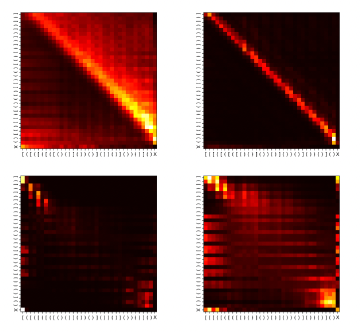
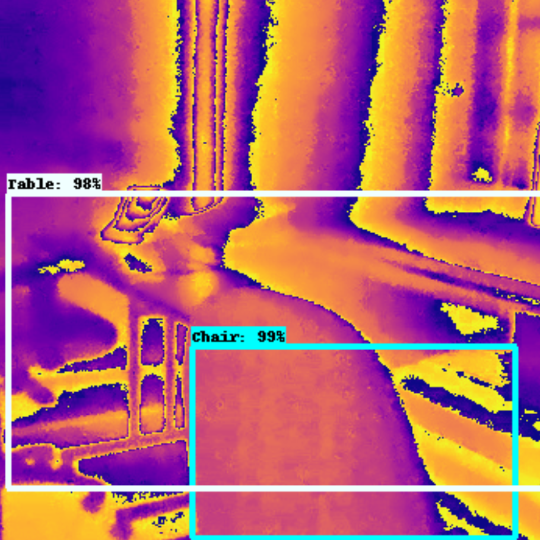

|
Euan Ong I am a final-year undergraduate at the University of Cambridge, studying Computer Science. My ambition is to develop powerful, yet safe and interpretable abstract reasoners, whose internal state and behaviour remain transparent to the end user. To this end, I'm particularly interested in exploring how the mathematical toolkits we use to understand and structure programs ‒ such as formal methods, types and category theory ‒ can inspire new ways to both reverse-engineer existing neural networks, and build scalable neurosymbolic systems. |
{kind=link}
ResearchSo far, my research has broadly focused on studying the behaviour of neural networks in vitro: understanding both how they generalise when learning to perform abstract tasks, and what this tells us about the algorithms they've learned in order to do so. I'm currently probing the foundations of neural algorithmic reasoning, exploring attacks on vision-language models, and poking language model representations with a stick. |
Published work |
|

|
Learnable Commutative Monoids for Graph Neural Networks
Euan Ong, Petar VelicÃåkovicÃÅ Learning on Graphs, 2022 arXiv / reviews / project page Using ideas from abstract algebra and functional programming, we built a new GNN aggregator that beats the state of the art on complex aggregation problems (especially out-of-distribution) while remaining efficient and parallelisable on large graphs. |
Informal projects |
|
|  |
Dissecting Deep Learning for Systematic Generalisation
Euan Ong, Etaash Katiyar, Kai-En Chong, Albert Qiaochu Jiang Informal research, 2021 We investigated the capabilities of transformers to systematically generalise when learning to recognise formal languages (such as Parity and 2-Dyck), empirically corroborating various theoretical claims about transformer generalisation. Inspired by our observations, we derived a parallel, stackless algorithm for recognising 2-Dyck that could (in principle) be implemented by a transformer with a constant number of attention layers. |
|  |
Object Detection in Thermal Imagery via Convolutional Neural
Networks
Euan Ong, Niki Trigoni, Pedro Porto Barque de Gusmão Technical report, 2019 We trained a Faster R-CNN object detection network to identify landmarks (e.g. doors and windows) in thermal images of indoor environments, with applications in the development of navigational aids for search and rescue operations. |
|
Design inspired by Jon Barron's site. |